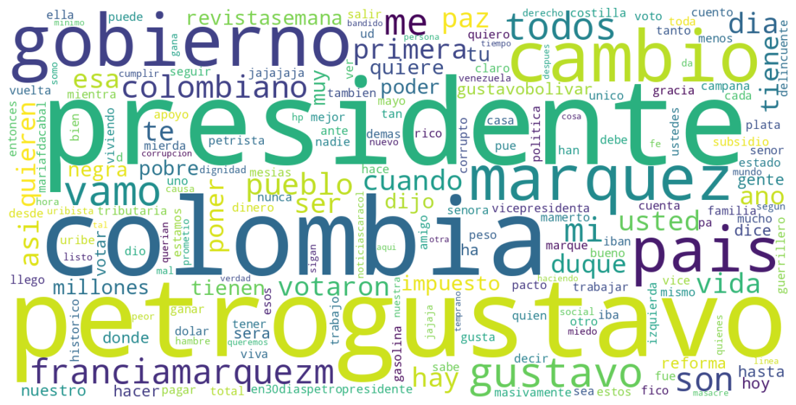
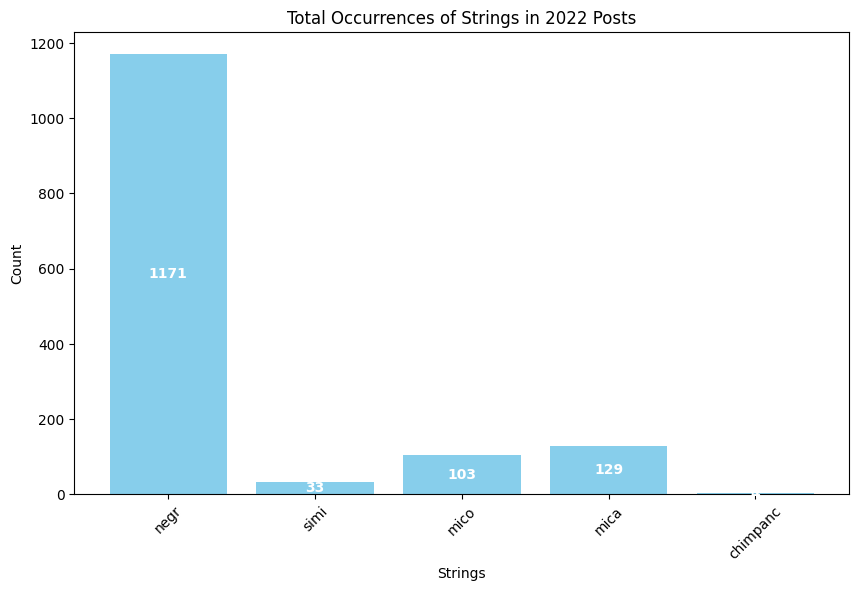
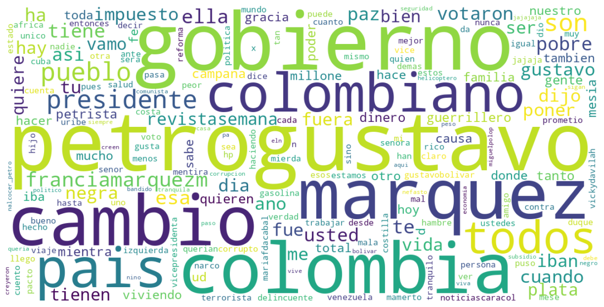
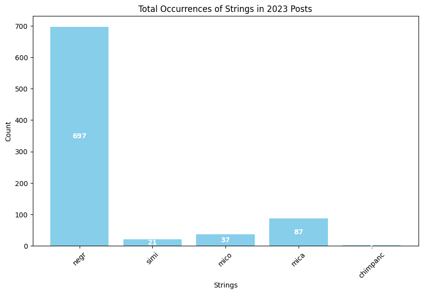
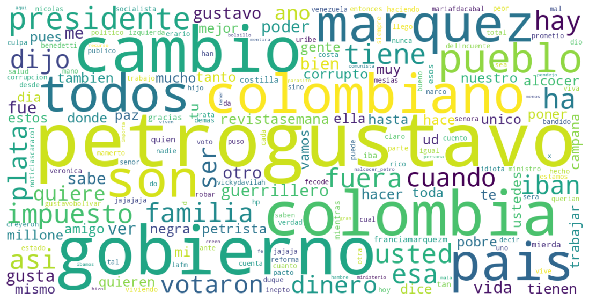
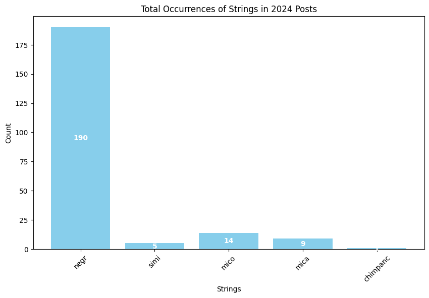
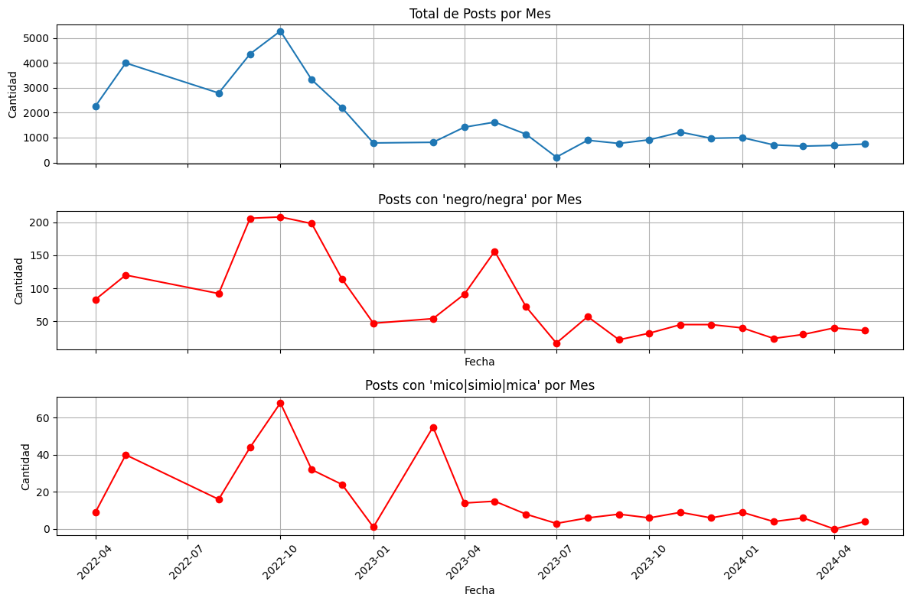

ACERCAMIENTO POR AÑO#
import pandas as pd
import pandas as pd
from unidecode import unidecode
from wordcloud import WordCloud
from nltk.corpus import stopwords
from collections import Counter
import re
import pandas as pd
import matplotlib.pyplot as plt
import os
import matplotlib.pyplot as plt
---------------------------------------------------------------------------
ModuleNotFoundError Traceback (most recent call last)
Cell In[1], line 3
1 import pandas as pd
2 import pandas as pd
----> 3 from unidecode import unidecode
4 from wordcloud import WordCloud
5 from nltk.corpus import stopwords
ModuleNotFoundError: No module named 'unidecode'
df = pd.read_excel(os.path.join('..','data','processed','usuarios_posts_fechas_.xlsx'))
df.sort_values(by='UTC Date', inplace=True)
agrupaciones_por_año = df.groupby(df['UTC Date'].dt.year).size()
df_2020 = df[df['UTC Date'].dt.year == 2020]
df_2021 = df[df['UTC Date'].dt.year == 2021]
df_2022 = df[df['UTC Date'].dt.year == 2022]
df_2023 = df[df['UTC Date'].dt.year == 2023]
df_2024 = df[df['UTC Date'].dt.year == 2024]
print(f"2020: {len(df_2020)} posts")
print(f"2021: {len(df_2021)} posts")
print(f"2022: {len(df_2022)} posts")
2020: 0 posts
2021: 0 posts
2022: 24181 posts
df_2022['post']
6218 @dignaccion @wilsona25901603 @hollmanibanezp @...
6217 @petrogustavo ojo colombia esto no es un jueg...
29097 @yosefuribe ese resentimiento es el que no los...
29096 https://t.co/ulv8kepfcj por un mejor vivir (sa...
6216 @argirocasta888 que belleza la de francia , a ...
...
38362 ahora si.... a vivir sabroso como dijo la neg...
11986 @maffenovoa todos los que votaron por petro a ...
19955 @maffenovoa todos los que votaron por petro a ...
25423 @wradiocolombia @gustavobolivar que se vaya a ...
26845 @wradiocolombia @gustavobolivar que se vaya a ...
Name: post, Length: 24181, dtype: object
stop_words = set()
stop_words.update([ 'sabroso', 'petro', 'vivir', 'francia', 'Co', 't', 'a', 'co', 'yo',
'a', 'de', 'https', 'http', 'y', 'e', 'el', 'den', 'por', 'ni', 'eso', 'que', 'con', 've', '1', 'lo', 'la', 'los', 'estan', 'no', 'le', 'se'
,'es', 'como','su', 'va', 'del','en', 'esta', 'ya', 'van', 'todo', 'para', 'mas', 'les', 'esto', 'sus', 'sin','o', 'ese', 'ahora', 'pero',
'ello', 'porque', 'un', 'si', 'al', 'que', 'las', 'q', 'ellos', 'ahi', 'era','nada', 'nos', 'una', 'este', 'solo'])
AÑO 2022#
text_all = " ".join(df_2022['post'].tolist())
from wordcloud import WordCloud
wordcloud = WordCloud(
width=1200,
height=600,
background_color='white',
stopwords=stop_words,
collocations=False, # evita palabras pegadas
max_words=200
).generate(text_all)
plt.figure(figsize=(15, 7))
plt.imshow(wordcloud, interpolation='bilinear')
plt.axis('off')
plt.show()

strings_to_count = ['negr', 'simi', 'mico', 'mica', 'chimpanc']
counts = {string: len(re.findall(string, text_all)) for string in strings_to_count}
# Create a barplot
import matplotlib.pyplot as plt
plt.figure(figsize=(10, 6))
bars = plt.bar(counts.keys(), counts.values(), color='skyblue')
plt.title('Total Occurrences of Strings in 2022 Posts')
plt.xlabel('Strings')
plt.ylabel('Count')
plt.xticks(rotation=45)
# Add count labels inside the bars
for bar, count in zip(bars, counts.values()):
plt.text(bar.get_x() + bar.get_width() / 2, bar.get_height() / 2, str(count),
ha='center', va='center', color='white', fontweight='bold')
plt.show()

AÑO 2023#
text_all = " ".join(df_2023['post'].tolist())
from wordcloud import WordCloud
wordcloud = WordCloud(
width=1200,
height=600,
background_color='white',
stopwords=stop_words,
collocations=False, # evita palabras pegadas
max_words=200
).generate(text_all)
plt.figure(figsize=(15, 7))
plt.imshow(wordcloud, interpolation='bilinear')
plt.axis('off')
plt.show()

strings_to_count = ['negr', 'simi', 'mico', 'mica', 'chimpanc']
counts = {string: len(re.findall(string, text_all)) for string in strings_to_count}
# Create a barplot
import matplotlib.pyplot as plt
plt.figure(figsize=(10, 6))
bars = plt.bar(counts.keys(), counts.values(), color='skyblue')
plt.title('Total Occurrences of Strings in 2023 Posts')
plt.xlabel('Strings')
plt.ylabel('Count')
plt.xticks(rotation=45)
# Add count labels inside the bars
for bar, count in zip(bars, counts.values()):
plt.text(bar.get_x() + bar.get_width() / 2, bar.get_height() / 2, str(count),
ha='center', va='center', color='white', fontweight='bold')
plt.show()

AÑO 2024#
text_all = " ".join(df_2024['post'].tolist())
from wordcloud import WordCloud
wordcloud = WordCloud(
width=1200,
height=600,
background_color='white',
stopwords=stop_words,
collocations=False, # evita palabras pegadas
max_words=200
).generate(text_all)
plt.figure(figsize=(15, 7))
plt.imshow(wordcloud, interpolation='bilinear')
plt.axis('off')
plt.show()

strings_to_count = ['negr', 'simi', 'mico', 'mica', 'chimpanc']
counts = {string: len(re.findall(string, text_all)) for string in strings_to_count}
# Create a barplot
import matplotlib.pyplot as plt
plt.figure(figsize=(10, 6))
bars = plt.bar(counts.keys(), counts.values(), color='skyblue')
plt.title('Total Occurrences of Strings in 2024 Posts')
plt.xlabel('Strings')
plt.ylabel('Count')
plt.xticks(rotation=45)
# Add count labels inside the bars
for bar, count in zip(bars, counts.values()):
plt.text(bar.get_x() + bar.get_width() / 2, bar.get_height() / 2, str(count),
ha='center', va='center', color='white', fontweight='bold')
plt.show()

df['UTC Date'] = pd.to_datetime(df['UTC Date'])
# Crear año-mes
df['year_month'] = df['UTC Date'].dt.to_period('M')
# 🔹 Total posts
posts_per_month = df.groupby('year_month').size()
# 🔹 Filtrar posts con "negr"
mask = df['post'].str.contains(r'negr', case=False, na=False)
df_negro = df[mask]
posts_negro_per_month = df_negro.groupby('year_month').size()
mask_1 = df['post'].str.contains(r'mico|simio|mica', case=False, na=False)
df_mico = df[mask_1]
posts_mico_per_month = df_mico.groupby('year_month').size()
posts_mico_per_month = posts_mico_per_month.reindex(posts_per_month.index, fill_value=0)
# Alinear índices
posts_negro_per_month = posts_negro_per_month.reindex(posts_per_month.index, fill_value=0)
# Convertir índices
posts_per_month.index = posts_per_month.index.to_timestamp()
posts_negro_per_month.index = posts_negro_per_month.index.to_timestamp()
posts_mico_per_month.index = posts_mico_per_month.index.to_timestamp()
# 📊 Crear subplots
fig, axes = plt.subplots(3, 1, figsize=(12,8), sharex=True)
# 🔹 Plot 1: Total
axes[0].plot(posts_per_month.index, posts_per_month.values, marker='o')
axes[0].set_title("Total de Posts por Mes")
axes[0].set_ylabel("Cantidad")
axes[0].grid(True)
# 🔹 Plot 2: Posts con "negr"
axes[1].plot(posts_negro_per_month.index, posts_negro_per_month.values,
marker='o', color='red')
axes[1].set_title("Posts con 'negro/negra' por Mes")
axes[1].set_xlabel("Fecha")
axes[1].set_ylabel("Cantidad")
axes[1].grid(True)
# 🔹 Plot 2: Posts con "mico" o "sim"
axes[2].plot(posts_mico_per_month.index, posts_mico_per_month.values,
marker='o', color='red')
axes[2].set_title("Posts con 'mico|simio|mica' por Mes")
axes[2].set_xlabel("Fecha")
axes[2].set_ylabel("Cantidad")
axes[2].grid(True)
# Rotar fechas
plt.xticks(rotation=45)
plt.tight_layout()
plt.show()
plt.show()
